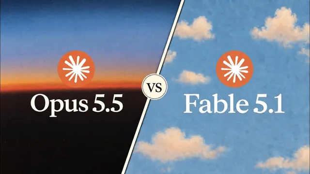

Opus 5.5 vs Fable 5.1, 실전 7가지로 붙여봤다 (상대가 안 됨)

원본 영상 보기 →
- 벤치마크보다 내 업무로 직접 비교하세요
- 토큰을 더 쓴 모델이 더 비싼 건 아니에요
- 맥락 양이 모델 선택의 기준이 됩니다
한 줄 요약
Ben AI 채널의 Ben이 Claude의 신모델 Opus 5.5와 Fable 5.1을 실제 업무 7가지에 똑같이 돌려 봤어요. 슬라이드 제작, 디자인, 조사, 문서 작성, 데이터 분석, 세컨드 브레인 분석까지요. 결과는 Opus 5.5가 품질·비용·속도 대부분에서 이겼지만, 맥락과 데이터가 방대한 작업만큼은 Fable 5.1이 더 깊게 파고들었습니다.
전체 내용 정리
벤치마크 대신 실제 업무로 비교했어요
Anthropic이 새로 내놓은 Opus 5.5는 벤치마크상 Fable 5.1보다 성능이 좋고 Claude Opus 5보다 가격도 쌉니다.
그런데 Ben은 벤치마크를 그대로 믿기 어렵다고 봐요. 그래서 자기가 매일 하는 일 7가지에 두 모델을 똑같은 프롬프트로 돌렸습니다. 슬라이드 덱 작성, 랜딩 페이지 디자인, 경쟁 영상 조사, 고객 사례 조사, 수업 문서 작성, 고객 데이터 분석, 세컨드 브레인 분석이요. 사례마다 어느 쪽 결과물이 나았는지, 시간과 토큰, 비용이 얼마나 들었는지를 함께 비교했어요.
슬라이드 덱: Opus의 차트와 문구가 압도적이었어요
첫 과제는 커넥터로 마케팅 데이터를 가져와 최근 30일 성과를 직전 달과 비교하는 슬라이드 덱이었습니다. 가능한 곳에 차트·그래프·시각 자료를 넣으라고 했고, 스타일을 따르는지 보려고 참고 이미지도 줬어요.
Fable 5.1은 스타일은 잘 따랐습니다. 그런데 거의 모든 그래프와 표가 너무 작거나 알아보기 어려웠고, 문구도 장황해서 읽기 힘들었어요.
Opus 5.5는 스타일에 그라데이션까지 살짝 얹었고, 막대그래프와 도표를 제대로 구현했으며 문구도 핵심만 짚어 훨씬 명확했습니다. Anthropic이 Opus 5.5의 글쓰기 실력을 따로 강조한 부분과도 맞아떨어져요.
Opus는 22분에 3천만 토큰, Fable은 21분에 2천만 토큰을 썼습니다. Opus가 발표 자료를 만들기 전에 분석을 더 깊게 했다는 뜻으로 보이는데, 비용은 Fable의 절반 수준이었어요.
랜딩 페이지: 참고 사이트를 더 닮게 만든 건 Opus였어요
Ben이 최근 출시한 세컨드 브레인 앱의 랜딩 페이지를 다시 디자인하는 과제였습니다. 원래 사이트, 스타일을 따라 할 참고 사이트 링크, 애플의 리퀴드 글래스 효과가 담긴 GitHub 저장소를 주고, 힉스필드로 스크롤 애니메이션을 넣으라고 지시했어요.
Fable 5.1은 레이아웃을 크게 바꾸면서도 스타일은 꽤 따랐습니다. 메뉴의 리퀴드 글래스, 스크롤 애니메이션, 앱 스크린샷, 호버 애니메이션까지 넣어 괜찮았지만 놀랍지는 않았어요.
Opus 5.5의 결과물은 참고 사이트와 훨씬 비슷했고, 3D 효과가 들어간 스크롤 애니메이션이 더 부드러웠습니다. 게다가 참고 사이트에서 가져온 경쟁 솔루션 비교표와 FAQ까지 추가했어요.
Opus는 17분에 1,300만 토큰, Fable은 14분에 500만 토큰을 썼는데 비용은 Opus가 거의 절반이었습니다.
조사: Opus가 더 넓게 찾고 더 싸게 끝냈어요
세 번째는 준비 중인 새 영상 주제로 지난 7일간 올라온 유튜브 영상을 훑어 잘 된 제목과 썸네일을 찾는 경쟁 조사였습니다.
Fable 5.1은 관련 영상 50개를 분석해 성과순으로 정리하고 '썸네일 아웃라이어'를 뽑아 줬어요. Opus 5.5는 비슷한 형식이었지만 168개 영상을 분석했고, 그중 59개는 비영어권 영상까지 창의적으로 찾아 넣었습니다. Opus 15분, Fable 14분이 걸렸고 Opus가 토큰을 두 배 넘게 써서 비용은 조금 더 들었지만, 조사 깊이를 보면 Opus가 낫다는 게 Ben의 판단이에요.
네 번째는 기업의 AI 도입을 높이는 전략과 팁을 주제로 한 영상 개요를 위해 Claude의 방대한 고객 사례 라이브러리를 조사하는 일이었습니다.
Fable 5.1은 13가지 전략을 표로 정리하고 항목마다 한 줄 요약과 실제 인용문·링크를 근거로 붙였어요. 팁도 뻔하지 않았고요. Opus 5.5는 15가지 전략을 네 개 범주로 나눠 영상 구성을 더 체계적으로 잡았고, 역시 링크와 근거를 달았습니다.
결과물은 둘 다 훌륭해서 비슷했는데, 시간이 달랐어요. Opus는 13분, Fable은 20분. 그리고 Opus는 Sonnet 모델로 하위 에이전트를 대거 돌려 하위 에이전트에서만 500만 토큰을 썼는데도 비용은 절반 수준이었습니다. 거의 혼자 작업한 Fable은 15달러가 나왔고요. Ben은 조사 작업에는 Opus 5.5를 강하게 추천해요.
문서 작성: 레이아웃까지 Opus가 정돈됐어요
프롬프팅에 관한 자기 유튜브 영상을 액셀러레이터 커뮤니티용 수업 문서로 바꿔 달라고 했습니다. 영상 링크와 함께 스크린샷 촬영과 초 단위 타임스탬프 전사를 가져올 수 있는 도구 권한을 줬어요.
Fable 5.1은 브랜드 색상을 적용하고 영상 스크린샷에 강조 표시와 설명을 붙인 구글 문서를 만들어 인상적이었지만 레이아웃이 완벽하지 않았습니다.
Opus 5.5는 브랜드 스타일을 잘 입혔을 뿐 아니라 레이아웃이 훨씬 정돈됐고, 스크린샷 속 중요한 부분을 화살표와 추가 설명으로 강조했으며 박스 정렬도 완벽했어요. 문구도 더 직접적이고 명확해서 Ben은 "그 방향으로 훈련됐다더니 차이가 느껴진다"고 평합니다.
토큰은 Opus 1,300만, Fable 900만이었지만 비용은 Opus가 5달러로 거의 절반이었어요.
데이터 분석: 여기서는 Fable이 훨씬 깊었어요
최근 2개월간의 고객 지원 통화, Q&A, 지원 티켓을 모두 보고 고객 인사이트 보고서, 공통 문제 기반 영상 아이디어, 제품 개선안, 고객 프로필 분석을 만들어 달라는 과제였습니다.
Fable 5.1은 한 시간 넘게 돌며 고객 지원 통화 555건, Q&A 15건, 지원 티켓 266건을 분석했어요. 영상 아이디어 14개와 제품 개선 우선순위 목록을 모두 실제 통화 인용구로 뒷받침했고, ICP(이상적 고객 프로필) 분석도 매우 포괄적이었습니다.
Opus 5.5는 통화 248건만 분석했어요. 영상 아이디어 14개와 제품 개선안 13개를 냈지만 녹취록 링크만 있을 뿐 직접 인용구가 없었고, 아이디어와 고객 프로필 분석도 Fable보다 못했습니다.
Fable은 1시간 15분에 3,300만 토큰, 100달러. Opus는 40분에 700만 토큰, 62달러였어요. Ben은 Fable이 Opus보다 하위 에이전트를 훨씬 많이 돌린 게 토큰 차이의 이유라고 보고, 오케스트레이터로 알려진 Fable이 맥락이 많은 복잡한 작업에서 더 많은 노력을 쏟는 것 같다고 해석합니다.
세컨드 브레인 분석: 같은 패턴이 반복됐어요
마지막으로 세컨드 브레인을 훑어 지난 1년간의 사업 궤적을 분석해 달라고 했습니다. 이룬 성과, 내린 결정, 끝까지 지킨 계획, 해결한 병목이요.
Fable 5.1은 파일 199개를 읽고 연간 흐름을 단계별로 나눠 결정·계획·변경·성과·해결한 문제·남은 과제를 표로 정리했고, 무엇이 실제 성과를 끌어냈는지 요약표까지 줬어요.
Opus 5.5는 훨씬 빨랐지만 Fable의 4분의 1 수준인 약 50개 문서만 읽었습니다. 구조는 비슷해도 내용이 짧고 성과 요인이나 결론이 빠져서 분석이 얕았어요.
Opus 5분에 300만 토큰, 2달러. Fable 17분에 500만 토큰, 17달러로 비용 차이는 컸습니다.
결론: 대부분은 Opus, 방대한 맥락은 Fable
Ben의 결론은 이래요. 두 모델 모두 강력하지만 품질·비용·속도 면에서 대부분의 사례는 Opus 5.5가 낫고, 특히 카피라이팅과 디자인이 인상적이었습니다. 방대한 문맥이나 데이터를 읽어야 하는 매우 복잡한 작업에서는 추가 비용을 감수할 수 있다면 Fable 5.1을 고려할 만하고, Fable이 여전히 더 나은 오케스트레이션 모델일 수도 있다고 보고요.
한 가지 덧붙인 가설이 흥미롭습니다. Anthropic이 새 모델 출시 초기에 컴퓨팅 자원을 더 투입했다가 몇 주 뒤 노력 수준이나 추론 능력을 낮춘다는 거예요. Fable에서도 그런 연구가 있었고 Ben도 출시 초기 답변이 더 깊었다고 느꼈기 때문에, 앞으로 몇 주간 Opus 5.5 성능이 조금씩 떨어지는 것처럼 느껴질 수 있다고 경고합니다.
핵심 인사이트
- 벤치마크보다 내 업무로 직접 비교하세요: 같은 프롬프트를 두 모델에 돌려 품질·시간·토큰·비용을 나란히 보니, 벤치마크 점수로는 알 수 없던 "어떤 일에 어떤 모델"이 선명해졌습니다.
- 토큰을 더 쓴 모델이 더 비싼 건 아니에요: Opus 5.5는 여러 사례에서 토큰을 더 많이 쓰고도 비용은 절반 수준이었습니다. 하위 에이전트를 저렴한 Sonnet으로 돌리는 방식이 속도와 비용을 함께 잡았어요.
- 맥락 양이 모델 선택의 기준이 됩니다: 고객 통화 555건, 파일 199개처럼 읽어야 할 자료가 방대할수록 Fable 5.1이 더 많이 읽고 근거를 더 촘촘히 달았어요. 반대로 글쓰기·디자인·일반 조사는 Opus 5.5가 더 빠르고 싸고 좋았습니다.
오늘 당장 해볼 것
- 지금 AI에 맡기는 업무를 "글쓰기·디자인·일반 조사"와 "자료가 방대한 분석"으로 나눠 목록을 적어 보세요. 수백 건의 상담 기록이나 1년치 문서 같은 게 후자입니다.
- 자동화를 맡긴 업체에 "우리 워크플로우는 어떤 모델을 쓰고 한 번 돌릴 때 비용이 얼마인지", "자료가 많은 분석 작업에만 더 비싼 모델을 쓰도록 나눌 수 있는지" 물어보세요.
- 자주 쓰는 보고서나 문서 한 건을 골라 같은 지시문으로 두 모델에 맡겨 보세요. 결과물 품질·시간·비용을 표 한 장에 기록해 두고 몇 주 뒤 같은 테스트를 다시 하면 성능 변화도 확인할 수 있어요.